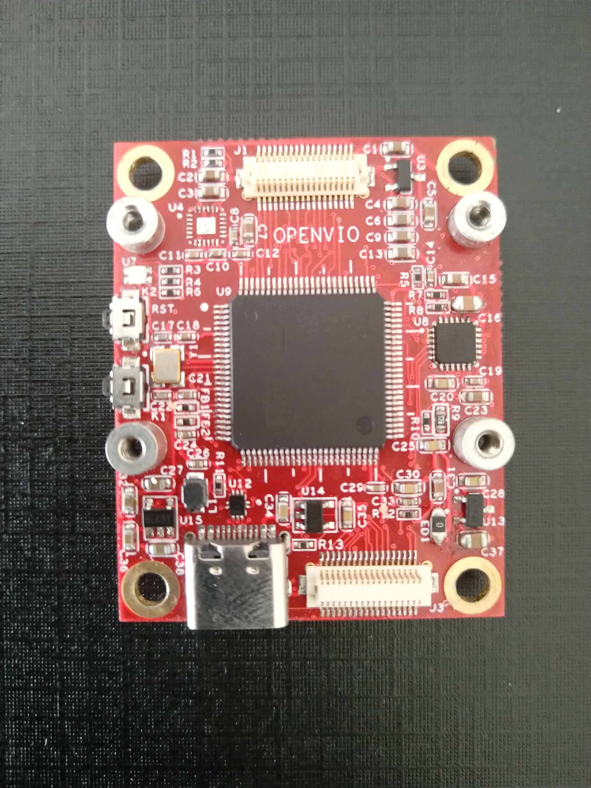
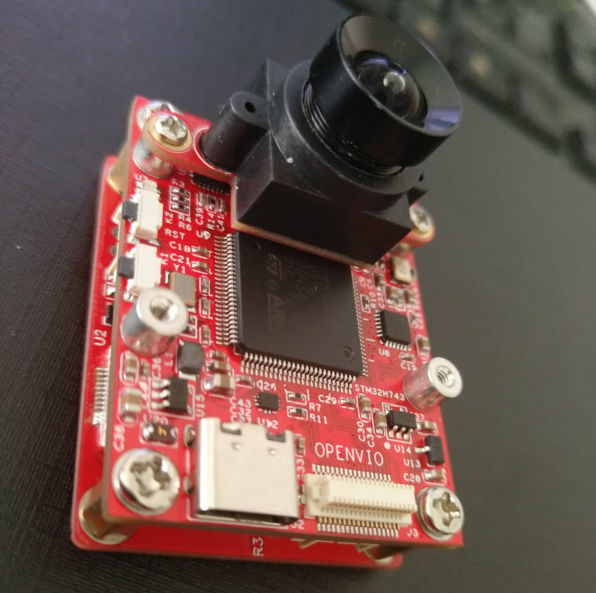

OPENVIO使用说明
简介
OPENVIO 一款脱胎于OPENMV的智能摄像头。
在OPENMV硬件基础上增加了USB2.0芯片(USB3315）和IMU芯片（MPU6050），除却兼容OPENMV固件外，还可以将摄像头原始图像（未压缩图像）和IMU九轴数据高速传输至PC，可以作为SLAM单目IMU方案研究的低廉传感器方案（如港科大的VINS-MONO）.多种接口方便扩展更多功能，比如扩展超声波或激光模块后作为PX4光流模块使用（暂未实现 还在研发中）。
源码和资料
新架构OPENVIO-APP源码(github)【开发环境：Vscode Makefile】
新架构OPENVIO-BOOTLOADER源码(github)【开发环境：Vscode Makefile】
新架构OPENVIO-APP源码(gitee)【开发环境：Vscode Makefile】
新架构OPENVIO-BOOTLOADER源码(gitee)【开发环境：Vscode Makefile】
OPENVIO源码【开发环境：Keil5】
OPENVIO PC上位机【开发环境：QT5.6.0 qt-opensource-windows-x86-mingw492-5.6.0】
与OPENMV固件兼容性说明
可以直接刷入OPENMV H7的官方固件使用，也就是说，摄像头的功能皆兼容。但是由于扩展接口不同，所以不对官方固件做兼容。
| 三色LED | OV7725 | MT9V034 | 其他模块 |
|---|---|---|---|
| 仅兼容一颗 | 兼容 | 兼容 | 不兼容 |
功能及研发进度
| 功能 | 进度 |
|---|---|
| OPENMV两款摄像头兼容 | 已完成 |
| SLAM VIO 单目IMU传感器功能 | 已完成 |
| 港科大VINS-MONO | 已完成 |
| PC上位机 | 正在研发 |
| 小Demo | 正在研发 |
| PX4光流 | 正在研发 |
已有模块及正在研发模块
| 模块 | 进度 |
|---|---|
| OV7725 | 已完成 |
| MT9V034 | 已完成 |
| 下载调试器模块 | 已完成 |
| 正面彩屏模块 | 正在研发 |
| 背面彩屏及锂电源模块 | 正在研发 |
| 超声波模块 | 正在研发 |
Vins-Mono 安装和使用
- ubuntu16
- ros版本kinetic

ROS安装
-
设置Ubuntu的sources.list
sudo sh -c 'echo "deb http://packages.ros.org/ros/ubuntu $(lsb_release -sc) main" > /etc/apt/sources.list.d/ros-latest.list' -
设置key
sudo apt-key adv --keyserver hkp://ha.pool.sks-keyservers.net:80 --recv-key C1CF6E31E6BADE8868B172B4F42ED6FBAB17C654 -
更新package
sudo apt-get update -
安装ROS kinetic完整版
sudo apt-get install ros-kinetic-desktop-full -
安装完可以查看可用的package
apt-cache search ros-kinetic -
更新环境
echo "source /opt/ros/kinetic/setup.bash" >> ~/.bashrc source /opt/ros/kinetic/setup.bash -
创建工作空间
mkdir -p ~/catkin_ws/src mkdir -p ~/catkin_ws/build mkdir -p ~/catkin_ws/devel
VINS-MONO安装编译
- 安装package
sudo apt-get install ros-kinetic-cv-bridge ros-kinetic-tf ros-kinetic-message-filters ros-kinetic-image-transport
安装Ceres
-
编译准备
# CMake sudo apt-get install cmake # google-glog + gflags sudo apt-get install libgoogle-glog-dev # BLAS & LAPACK sudo apt-get install libatlas-base-dev # Eigen3 sudo apt-get install libeigen3-dev # SuiteSparse and CXSparse (optional) # - If you want to build Ceres as a *static* library (the default) # you can use the SuiteSparse package in the main Ubuntu package # repository: sudo apt-get install libsuitesparse-dev # - However, if you want to build Ceres as a *shared* library, you must # add the following PPA: sudo add-apt-repository ppa:bzindovic/suitesparse-bugfix-1319687 sudo apt-get update sudo apt-get install libsuitesparse-dev -
编译安装
wget http://ceres-solver.org/ceres-solver-1.14.0.tar.gz tar zxf ceres-solver-1.14.0.tar.gz mkdir ceres-bin cd ceres-bin cmake ../ make -j4 make test # Optionally install Ceres, it can also be exported using CMake which # allows Ceres to be used without requiring installation, see the documentation # for the EXPORT_BUILD_DIR option for more information. make install
Eigen3.3.3 安装
- Eigen3.3.3 安装
wget https://codeload.github.com/eigenteam/eigen-git-mirror/tar.gz/3.3.3 mv 3.3.3 eigen-git-mirror-3.3.3.tar.gz tar zxf eigen-git-mirror-3.3.3.tar.gz cd eigen-git-mirror-3.3.3 mkdir build cd build cmake .. make make install
OpenCV-3.3.1 安装
-
OpenCV-3.3.1 安装
wget https://codeload.github.com/opencv/opencv/tar.gz/3.3.1 mv 3.3.1 opencv-3.3.1.tar.gz tar zxf opencv-3.3.1.tar.gz cd opencv-3.3.1 mkdir build cd build cmake .. make -j8 make install -
编译
cd ~/catkin_ws/src git clone https://github.com/HKUST-Aerial-Robotics/VINS-Mono.git cd ../ catkin_make source ~/catkin_ws/devel/setup.bash
ROS_OPENVIO 编译
- ROS_OPENVIO 编译流程
cd ~/catkin_ws/src git clone https://gitee.com/guanglunking/OPENVIO_ROS cd ../ catkin_make source ~/catkin_ws/devel/setup.bash
执行
- 在三个终端中分别执行如下命令（如果单独执行rosrun openvio openvio_ros失败的话则需要先在一个新窗口中roscore）
roslaunch vins_estimator euroc.launch roslaunch vins_estimator vins_rviz.launch rosrun openvio openvio_ros
ROS常用命令
-
roscore 是你在运行所有ROS程序前首先要运行的命令
roscore -
列出正在运行的节点
rosnode list -
查看某个特定节点信息
rosnode info [node_name] -
列出所有的topic
rostopic list -v -
显示topics上发布的message
rostopic echo [topic_name] -
查看topic的message类型
rostopic type [topic_name] -
查看message数据结构
rosmsg show [message_name]
图片
V1.0版本


V1.2版本

V1.3版本


V1.4版本


V1.5版本



V1.6版本



PC上位机

VINS-Mono